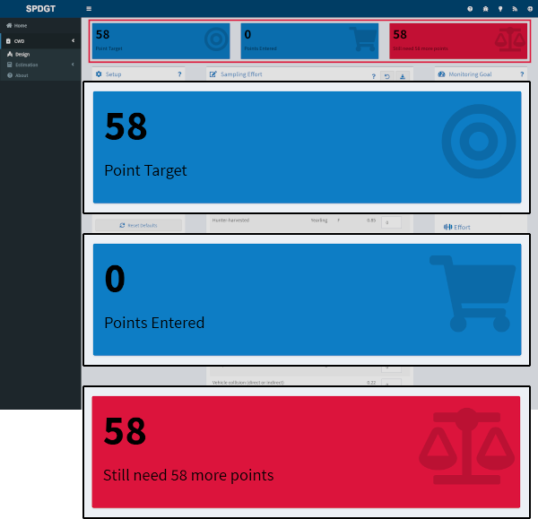
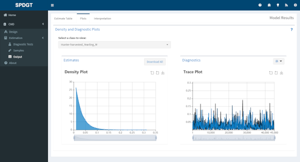
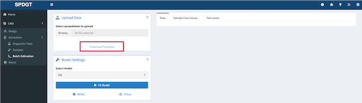
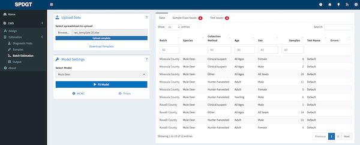

Weighted Surveillance
Introduction
This application provides tools for planning weighted surveillance sampling for chronic wasting disease (CWD), and estimating underlying prevelance after sampling has been completed. Models are available for white-tailed deer (Odocoileus virginianus), mule deer (Odocoileus hemionus), and elk (Cervus canadensis) populations, and an additional model allows combining samples from elk and mule deer in a single analysis.
Weighted surveillance is based on the simple principle that within a population there exists heterogeneity among individuals with regard to disease risk. To maximize efficiency and potentially increase the likelihood of detecting new disease foci, weighted surveillance programs exploit this heterogeneity by focusing disease detection efforts in groups most at risk. The underlying methods were orginially developed by Walsh et al. (2010) using a Frequentist statistical approach. These results were then refined and recast into a Bayesian statistical framework by Heisey et al. (2014). It is important to note that the use of weighted surveillance techniques requires that prior information is available to estimate heterogeneity in individual risk. A general discussion of CWD surveillance is given in Walsh et al. (2012).
The first tool, called Design, is used for planning weighted surveillance activities. The user specifies how much confidence they need, and what minimum prevalence they would like to detect in the group selected as a reference class (e.g., I would like a 95% confidence of detecting at least one case if the prevalence is at least 1%). This information then provides the total number of points required to meet the specified confidence for the chosen minimum prevalence. The user can then select from the potential sources of surveillance samples, and vary the number of samples arising from each source. This provides a means of setting sampling objectives for each source to ensure the requisite number of points is reached. This tool can also be used to evaluate in real-time how close a program is to achieving its goal given the number of samples collected from each source to date.
The second tool, called Estimation, is for use after sampling for CWD detection has occurred and no positive cases were found. It provides the means to estimate the potential underlying prevalence rate of CWD given the number of negative samples collected during surveillance. Of particular interest is the upper bound of the credible interval, which means there is, for example, a 95% probability that true prevalence is at or below the reported level given your sampling effort and lack of cases detected.
It’s important to note that these tools are entirely independent - you can use either one however you wish but there’s no need to use both, and changes made in one tool won’t have any affect in the other.
The techniques and theory underpinning them used in this application are described in Heisey et al. (2014). This application takes advantage of the R statistical software for estimation. Heterogeneity of risk classes are based on the chronic wasting disease information collected by the Wisconsin Department of Natural Resources. Jennelle et al. (2018) provide a description of the Wisconsin estimates and provide a case study of the application of weighted surveillance to CWD detection. The elk and mule deer weights are based on results reported in Walsh et al. (2012).
Help
Blue question marks in the various sections of the app link directly to the relevant sections of this document. If you have trouble with the site or have questions that aren’t covered here you can contact SpeedGoat, the site’s maintainer, by clicking on the life ring in the top-right of your screen. You can also issue a bug report by clicking on the bug icon in the header. Finally, if you have an idea for a new feature or analysis please let us know by clicking on the lightbulb icon and issuing a feature request. The help icons are shown in the image below:
Design Tool
The Design tool is used for planning weighted surveillance activities. If you’ve already collected your samples and just want to analyze the results you can skip the design tab and go straight to the Estimation tool.
To begin using the Design tool click on CWD and then Design in the sidebar.
Design Setup
The setup pane on the Design tab allows you to specify the monitoring goals of your surveillance program. It includes three sliders which can be used to set target sampling effort based on the desired outcome.
- Confidence - Use this slider to set the confidence you desire for detecting at least one case given the selected prevalence. The confidence level can also be thought of as 1 - alpha.
- Prevalence - Use this slider to set the minimum target prevalence for which you would like the specified confidence of detecting at least one case in the reference class (see Points).
- Sensitivity - The last slider is used to specify the diagnostic test sensitivity, which is typically assumed to be 1 unless live-testing is conducted.
For example, using the default values for White-tailed deer the target points will be based on having a 95% confidence of detecting at least one case given a latent prevalence of 0.05 in hunter-harvested yearling males.
Points
While moving the sliders in the input pane you should notice that the value displayed in the Target Points box at the top of the screen changes.

The Target Points value represents the number of samples you would need to collect from the reference class in order to achieve the goals you set in the input tab. Given the example of White-tailed deer above, you would need 58 samples from hunter-harvested yearling males to achieve 95% confidence of detection given a prevalence rate of 0.05. Which group of animals represents the reference class varies by species and disease, and samples from the reference class are always assigned a weight of 1. Samples from other classes are assigned different weights relative to the reference class and therefore will contribute more or less to hitting your target.
Effort Data Entry
The Sampling Effort table displays the Collection Method, Age and Sex of classes available in the model, along with the weights (relative to the reference class) assigned to each class. Enter the number of samples you propose to collect for each class in the last column and the Points Entered and Points Remaining boxes at the top of the screen will update. Along with the gauge widget on the right side, these boxes reflect how the sampling effort you’ve entered relates to your monitoring target. You can also explore how the different collection methods and demographic groups contribute to achieving your monitoring target using the donut charts at the bottom right of the page.
Estimation Tool
The Estimation tool is used to estimate the potential underlying prevalence rate of CWD after sampling has occurred and no positive cases were found.
To begin using the Estimation tool click on CWD and then Estimation in the sidebar. If you want to enter your own diagnostic test characteristics start on the Diagnostic Tests tab, or if you want to use the defaults provided you can skip straight to the Samples tab.
Diagnostic Test Characteristics
The Diagnostic Tests tab allows you to save different test characteristics to be referenced when you enter your sampling data.

The following methods are available for generating a posterior distibution for diagnostic test characteristics.
The ‘Default’ method uses the posterior distributions of the sensitivity and specificity based on the results in Vet Rec 151:610-612 for IHC on retropharyngeal lymph nodes and a Jeffreys prior (i.e., mean sensitiviy = 98.6% and mean specificity >99%).
The ‘Use data’ method allows the user to specify their results for each test, and requires the number of true and false positives and negatives. The posterior distributions for the test characteristics are then estimated using a Jeffreys prior.
The ‘Quantile’ method allows the user to specify the mean and 95% credible bounds for the posterior distribution of the test characteristics. These are used to generate a suitable Beta distribution.
The default method has already been entered for you, so if you plan on using the default test characteristics for all your samples you can move on to the Samples tab.
To enter your own test characteristics select the appropriate option for both sensitivity and specificity and enter the corresponding values. You can preview the distributions created based on your inputs in the plots to the right. When you’re happy with the distributions enter a name for the test and click the Save Test button to add it. Test names must be unique, and you can’t overwrite a test once you’ve saved it, so if you need to make changes just save a new test and make sure to select the correct one when entering your samples. Test characteristics can vary by collection method, age, and sex if needed, e.g. in cases where different tests are used depending on the collection method or when test characteristics vary based on the age or sex of the subject.
Sampling Data Entry
In order to run a model you need to enter the number of negative samples collected for each class using the Samples tab.
First select the species and collection method near the top of the Samples tab. Depending on the collection method additional options regarding age and sex of subjects may become available. Then select the appropriate test used for this collection method. Finally enter the number of samples you collected and click the Add Samples button to add these samples to your dataset.
Data you add through these inputs will appear in the Entered Data table to the right. If you make a mistake or change your mind you can select one or more rows in the table and use the Delete Selected Rows button to remove them from the dataset, or you can Delete All Rows to start over.
Model Settings
If you enter enter samples from elk or mule deer an additional dropdown will appear allowing you to choose between a single-species model or a combined model. You can adjust model settings using the MCMC button at the bottom of the Samples tab. Number of chains, burn-in length, and model iterations can all be adjusted if needed.
As of writing the priors available to the models are fixed and cannot be manipulated by the user. Heterogeneity of risk classes are based on the chronic wasting disease information described in Jennelle et al. 2018 and Walsh et al. 2012. The former provides a description of the Wisconsin estimates and a recent case study of the application of weighted surveillance to CWD detection. You can view the data by clicking the Priors button.
Running a model
When you’ve entered the appropriate information for each group of samples collected, checked that everything looks right in the Samples table, and adjusted the model settings if needed, click the Fit Model button to fit a model for your data. After a short time you’ll be prompted with a message letting you know if the model run was successful. If so a new Output tab will appear in the sidebar where you can view your results.
Output Tab
The Output tab is only available after you’ve entered data in the Samples tab and clicked the button to fit a model.
Estimates Table
The estimates table displays model outputs (estimated latent prevalence) for all classes (Collection Method/Age/Sex) in a single table. Mean, median, standard deviation, and credible intervals (90% and 95%) are reported for each class. Rows are color coded based on the number of samples entered for each class.
Output Plots
The plots page shows a posterior distribution plot for estimated latent prevalence of CWD by class, along with diagnostic plots for assessing model performance. By default a trace plot depicting every 100th iteration is displayed, but you can change the plotting interval or switch to an autocorrelation plot using the button at the top right of the Diagnostics section.
Change the data displayed in both plots by using the dropdown above the plots to select a different class. Use the buttons and sliders within the plots to zoom in to a finer scale or save as an image file. You can also download density plots for all classes in a single click using the Download All button.

Interpretation
The interpretation page provides some guidance for explaining the model output with regard to your actual population. By default the reference class is displayed, but you can also view an interpretation for a different class by changing the selection in the dropdown near the top of the page.
Report
Click the Download Report button to generate a full report of your data. The report includes all of the test and sample data you entered, the settings used, and the output tables and plots. Reports are available in html and Microsoft Word formats.
Batch Estimation
The batch estimation tool is designed to help users who need to estimates from many models. The tool has a friendly spreadsheet that may be downloaded by the user to enter their data and then uploaded to the site for estimation. To use batch estimation begin by clicking the Batch Estimation link in the sidebar.
Template
The first step is to download the batch estimation template. The template is a spreadsheet that can be used to enter data for multiple models. The template can be downloaded by clicking the Download Template link in the box titled Upload Data.

The template spreadsheet has 4 sheets: Data, Priors, Instructions, and Example. The Data sheet is where you will enter your data. The Priors sheet is where you can view the priors that will be used in the model. The Instructions sheet provides guidance on how to use the template. The Example sheet provides an example dataset.
The Data sheet has 7 columns that align with the models expectations and how other aspects of the website function. The first column Batch is used to group samples. Samples with the same value in the Batch column will be estimated together. The Species column is used to specify the species of the samples. The Collection Method column is used to specify the method used to collect the samples. The Age and Sex columns are used to specify the age and sex of animals sampled. The Samples column is used to specify the number of negative samples obtained for the combination of species, collection method, age, and sex. This column allows only whole numbers greater than or equal to 0. Finally the Test column is used to specify the diagnostic test to be used. Enter Default to use the default test. If a custom test is required then specify that in the website and enter the name of the test in the Test column exactly as it is in the website. For more information about diagnostic tests see the Diagnostic Tests section.
Note when entering data that not all combinations of species, collection method, age, and sex are valid. If any invalid combinations are present in your data when you upload it the website will issue a warning. Those entries with invalid combinations or those entries for which no prior exists will be removed prior to running any models.
When the data are entered and all entries checked upload the spreadsheet by clicking the Browse… button and selecting the file from your computer. Once the file is selected click the Open button to upload the data. The website will check the data and issue a warning if any invalid entries are present. The data will be shown to the user under the Data tab, while errors will be shown under the Sample Class Issues and Test Issues tabs.
Model Selection
After the data are uploaded the user must select the model to be used for estimation. The model can be selected by clicking the Select Model dropdown and selecting the desired model. The user can adjust model settings and MCMC parameters as needed. The settings are the same as those described in the Model Settings section.

Running a Batch Model
When satisfied that all inputs are correct click the Fit Model button to run the model. The website will run the model and display the results in a newly created Output link in the sidebar on the left. The website will also display a progress bar to show the user how far along the model is in the estimation process and notify the user of success or failure of the model runs.
Batch Estimation Output
After the model has run the website will display a results table and report generation option in the Output tab located in the sidebar on the left. Users are encouraged to download the results as a report by navigating to the Reports tab at the top of their screen and clicking the Download Report button. Reports will delivered as a compressed file with one report per batch that contains all of the plots and interpretation users expect from a single model run. For more details on the outputs see the Estimates Table, Output Plots, and Interpretation sections.

Suggestions
If you have suggestions or corrections that you would like to propose to this document please either file a bug report at this link or make a contribution and issue a pull request via the Huh/Help_Pages GitHub repository.
Developed by SpeedGoat